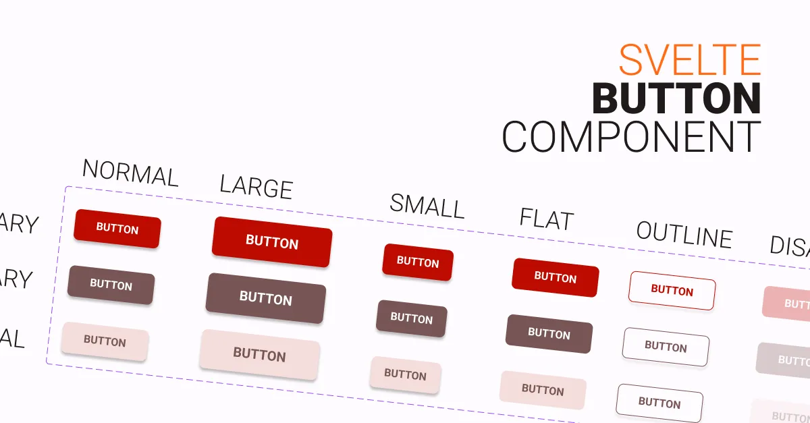

7 minutes to read ~ December 29, 2022
Create A Reusable Button Component for Svelte
Table of contents
Creating a button component for Svelte can be a quick and easy way to add custom, reusable buttons to your Svelte application. In this article, we’ll go through the steps to create a simple button component that you can use in your own Svelte projects.
We will use TypeScript and SASS to create the button component (Recommended, you will get autocompletion). However, if you prefer to use JavaScript and CSS, code for that will also be included in the article. You can copy the code which works best for you and your project.
Final result
Usages
Save the copied code to in your components folder, preferably in src/lib/components, as Button.svelte
<script>
import Button from 'path/to/Button.svelte';
</script>
<Button variant="primary" flat outline>Primary Flat Outtline Button</Button>Customizing
Colors
Colors are in CSS variable, so changing them will do most of the customizing you need.
Extending
Extending the button component is also easy. For example, if you want to add a new button type that is pill-shaped or rounded, you can simply add a new exported variable in the script tag named rounded. Then, in the style tag, add a new class called .rounded with the desired properties, in this case, border-radius.
Code
TS and SASS Version
<script lang="ts">
export let size: String | 'small' | 'normal' | 'large' = 'normal';
export let variant: String | 'primary' | 'secondary' | 'neutral' = 'primary';
export let invert = false;
export let outline = false;
export let flat = false;
export let disabled = false;
// Extending example
// Dont forget to add the extended classType in
// the button tag
export let rounded = false;
</script>
<button
class="{variant} {size}"
class:invert
class:outline
class:flat
class:disabled
class:rounded
on:click
on:focus
on:submit
>
<slot />
</button>
<style lang="scss">
button {
/* You may move the variables
in your global stylesheet
for better management */
--primary: #be0b00;
--primary-text: #ffffff;
--secondary: #775655;
--secondary-text: #ffffff;
--neutral: #f4dddc;
--neutral-text: #524342;
--focus-ring: #857372;
font-weight: bold;
text-transform: uppercase;
outline: 0;
border: none;
border-radius: 6px;
box-shadow: 0 2px 4px rgba(0, 0, 0, 0.199);
transition: box-shadow scale 100ms ease-in;
cursor: pointer;
font-size: 0.8rem;
/* STATES */
&:hover,
&:focus {
box-shadow: 0 3px 6px rgba(0, 0, 0, 0.199);
}
&:focus {
border: 2px solid var(--focus-ring);
}
/* SIZES */
&.normal {
padding: {
block: 1rem;
inline: 2rem;
}
}
&.large {
font-size: 1rem;
padding: {
block: 1.2rem;
inline: 3rem;
}
}
&.small {
padding: {
block: 0.8rem;
inline: 1rem;
}
}
/* COLORS */
&.primary {
background-color: var(--primary);
color: var(--primary-text);
&.invert {
background-color: var(--primary-text);
color: var(--primary);
}
}
&.secondary {
background-color: var(--secondary);
color: var(--secondary-text);
&.invert {
background-color: var(--secondary-text);
color: var(--secondary);
}
}
&.neutral {
background-color: var(--neutral);
color: var(--neutral-text);
&.invert {
background-color: var(--neutral-text);
color: var(--neutral);
}
}
/* OUTLINE */
&.outline {
background-color: transparent !important;
&.primary {
color: var(--primary);
border: 1px solid var(--primary);
}
&.secondary {
color: var(--secondary);
border: 1px solid var(--secondary);
}
&.neutral {
color: var(--neutral-text);
border: 1px solid var(--neutral-text);
}
}
/* FLAT */
&.flat {
box-shadow: none !important;
}
/* DISABLED */
&.disabled {
opacity: 0.3 !important;
pointer-events: none;
&:hover {
cursor: not-allowed !important;
}
}
/* EXTENDEDING */
&.rounded {
border-radius: 32px;
}
}
</style>JS and CSS Version
<script>
// 'small' , 'normal' , 'large'
export let size = 'normal';
// 'primary', 'secondary', 'neutral'
export let variant = 'primary';
export let invert = false;
export let outline = false;
export let flat = false;
export let disabled = false;
// Extending example
// Dont forget to add the extended classType in
// the button tag
export let rounded = false;
</script>
<button
class="{variant} {size}"
class:invert
class:outline
class:flat
class:disabled
class:rounded
on:click
on:focus
on:submit
>
<slot />
</button>
<style>
button {
--primary: #be0b00;
--primary-text: #fff;
--secondary: #775655;
--secondary-text: #fff;
--neutral: #f4dddc;
--neutral-text: #524342;
--focus-ring: #857372;
font-weight: bold;
text-transform: uppercase;
outline: 0;
border: none;
border-radius: 6px;
box-shadow: 0 2px 4px rgba(0, 0, 0, 0.199);
transition: box-shadow scale 100ms ease-in;
cursor: pointer;
font-size: 0.8rem;
}
button:hover,
button:focus {
box-shadow: 0 3px 6px rgba(0, 0, 0, 0.199);
}
button:focus {
border: 2px solid var(--focus-ring);
}
/* SIZES */
button.normal {
padding-block: 1rem;
padding-inline: 2rem;
}
button.large {
font-size: 1rem;
padding-block: 1.2rem;
padding-inline: 3rem;
}
button.small {
padding-block: 0.8rem;
padding-inline: 1rem;
}
/* VARIANTS */
button.primary {
background-color: var(--primary);
color: var(--primary-text);
}
button.primary.invert {
background-color: var(--primary-text);
color: var(--primary);
}
button.secondary {
background-color: var(--secondary);
color: var(--secondary-text);
}
button.secondary.invert {
background-color: var(--secondary-text);
color: var(--secondary);
}
button.neutral {
background-color: var(--neutral);
color: var(--neutral-text);
}
button.neutral.invert {
background-color: var(--neutral-text);
color: var(--neutral);
}
/* OUTLINE */
button.outline {
background-color: transparent !important;
}
button.outline.primary {
color: var(--primary);
border: 1px solid var(--primary);
}
button.outline.secondary {
color: var(--secondary);
border: 1px solid var(--secondary);
}
button.outline.neutral {
color: var(--neutral-text);
border: 1px solid var(--neutral-text);
}
/* FLAT */
button.flat {
box-shadow: none !important;
}
/* DISABLED */
button.disabled {
opacity: 0.3 !important;
pointer-events: none;
}
button.disabled:hover {
cursor: not-allowed !important;
}
/* EXTENDING */
button.rounded {
border-radius: 32px;
}
</style>Last updated: April 30, 2023